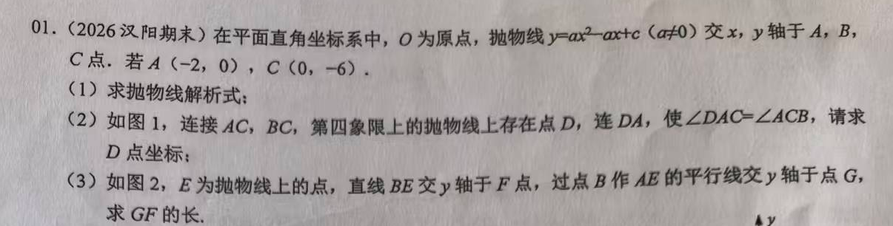
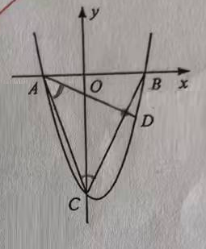
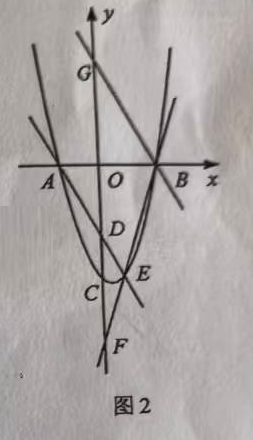
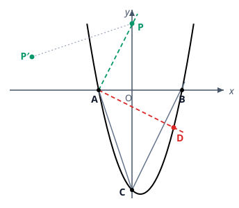

p28 待定系数、等角定 D 与 GF 定值
抛物线综合
二次函数待定系数平行线与内错角轴对称因式分解约分斜率定值问题
★★★★

📷 点击查看原图
[2026 汉阳期末] 在平面直角坐标系中，O 为原点，抛物线 y=ax2−ax+c（a=0）交 x、y 轴于 A、B、C 点。若 A(−2, 0)，C(0, −6)。
（1）求抛物线解析式；
（2）如图 1，连接 AC、BC，第四象限的抛物线上存在点 D，连 DA，使 ∠DAC=∠ACB，请求 D 点坐标；

（3）如图 2，E 为抛物线上的点，直线 BE 交 y 轴于 F 点，过点 B 作 AE 的平行线交 y 轴于点 G，求 GF 的长。

📌 知识点总结（点击展开／收起）
📌 知识点总结
| 知识点 | 说明 |
|---|
| 待定系数法 | 把已知点坐标代入 y=ax2−ax+c，解方程组求 a、c |
| 平行线与内错角 | 两直线平行 ⟺ 内错角相等，是"转移角"的基本工具 |
| 角平分线与轴对称 | ∠DAC=∠PAC 说明 AC 平分 ∠DAP，射线 AD 与射线 AP 关于直线 AC 对称 |
| 求对称点 | P 关于直线 l 的对称点 P′：PP′ 的中点在 l 上，且 PP′⊥l（垂直 ⟺ 斜率乘积为 −1） |
| 斜率的因式分解约分 | 抛物线 y=x2−x−6 上连线斜率 =x1−x2(x1−x2)(x1+x2−1)=x1+x2−1（平方差/因式分解约分） |
| 定值问题 | 设动点坐标代入，若结果中参数被消去，则该量为定值 |
✍️ 解题过程
第（1）问：求抛物线解析式
第一步：代入 C(0, −6)。x=0 时 y=c，所以 c=−6。
第二步：代入 A(−2, 0)。
a×(−2)2−a×(−2)+(−6)=0⟹4a+2a=6⟹a=1
L:y=x2−x−6=(x−3)(x+2)
令 y=0 得 x=−2 或 3，所以另一个 x 轴交点 B(3, 0)。
✅（1）答案：y=x2−x−6（B(3, 0)）
第（2）问：∠DAC = ∠ACB，求第四象限的点 D
第一步：作平行线转移角。直线 BC：过 C(0, −6)、B(3, 0)，斜率 =3−00−(−6)=2，解析式 y=2x−6。过 A 作 AP∥BC，则 AP：y=2(x+2)=2x+4，交 y 轴于 P(0, 4)。
由 AP∥BC，内错角相等：∠PAC=∠ACB。于是条件变成：
∠DAC=∠ACB=∠PAC⟹AC 平分 ∠DAP
第二步：确定射线 AD 的两个候选位置。与射线 AC 夹角等于 ∠PAC 的射线只有两条：射线 AP 本身，以及它关于直线 AC 的对称射线。
情况①（射线 AD 沿 AP 方向）：联立 y=2x+4 与抛物线：x2−x−6=2x+4⇒(x−5)(x+2)=0，交点 (5, 14) 在第一象限，舍去。
情况②（AD 与 AP 关于 AC 对称）：求 P(0, 4) 关于直线 AC 的对称点 P′。
第三步：求对称点 P′(u, v)。直线 AC：k=0−(−2)−6−0=−3，解析式 y=−3x−6。对称要满足两条：
（a）PP′ 的中点在对称轴上：中点 (2u, 2v+4) 代入 y=−3x−6：
2v+4=−3×2u−6⟹v=−3u−16
（b）PP′⊥AC（垂直 ⟺ 斜率乘积为 −1）：kPP′=uv−4，
uv−4×(−3)=−1⟹v=3u+4
联立（a）（b）：3u+4=−3u−16⇒310u=−20⇒u=−6, v=2，即 P′(−6, 2)。
第四步：写出直线 AD 并联立。AD 过 A(−2, 0) 与 P′(−6, 2)，斜率 =−6−(−2)2−0=−21：
AD:y=−21(x+2)
与抛物线联立：
x2−x−6=−21(x+2)⟹2x2−x−10=(x+2)(2x−5)=0
x=−2 是点 A（舍），x=25，代入得 y=−21×29=−49。点 (25, −49) 在第四象限 ✓。

📷 点击查看原图
✅（2）答案：D(25, −49)
第（3）问：求 GF 的长（定值）
第一步：设 E。设 E(t, t2−t−6)（图中 E 在第四象限，0<t<3；t=−2, 3 保证连线存在）。
第二步：AE 的斜率（因式分解约分）。
kAE=t−(−2)(t2−t−6)−0=t+2(t+2)(t−3)=t−3
BG∥AE 且过 B(3, 0)：y=(t−3)(x−3)。令 x=0：
G(0, 9−3t)
第三步：BE 的斜率与 F。
kBE=t−3(t2−t−6)−0=t−3(t+2)(t−3)=t+2
直线 BE：y=(t+2)(x−3)，令 x=0：
F(0, −3t−6)
第四步：作差求 GF。0<t<3 时 G 在 x 轴上方、F 在下方：
GF=yG−yF=(9−3t)−(−3t−6)=15
t 被完全消掉——GF 是定值，与 E 的位置无关！（本质：两条过 B(3,0) 的直线，y 轴截距差 =3×∣k2−k1∣=3×[(t+2)−(t−3)]=3×AB=15。）
数值验证：取 E(1, −6)：kAE=−2⇒G(0,6)；kBE=3⇒F(0,−9)，GF=15 ✓。取 E(2, −4)：G(0,3)、F(0,−12)，GF=15 ✓。
✅（3）答案：GF=15（定值）